El gusano de árbol de navidad (spirobranchus giganteus) es un pequeño gusano que habita en arrecifes que están cerca de Turquía. Se esconden en los tubos, y sacan sus cabezas, pero cuando perciben alguna amenaza, vuelven a esconder sus cabezas dentro del tubo. Los tentáculos parecidos a una pluma que parecen "Árboles de Navidad" son llamados radioles - ellos filtran al plankton para su alimento, y ayudan en la respiración, y también permiten que este gusano cante villancicos, muy muy suavemente.
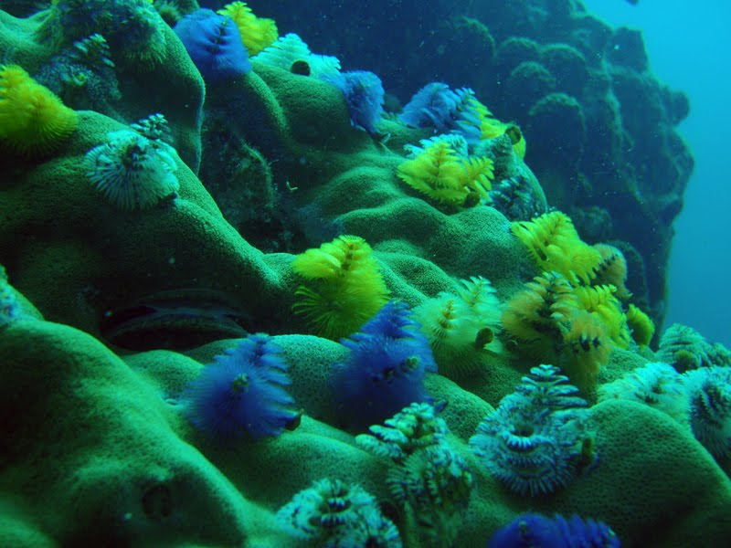 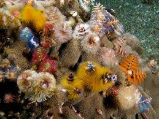 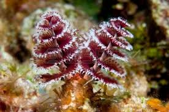La estrella de cesta gigante (astrophyton muricatum) es un antiguo invertebrado mesozoico que es encontrado alrededor de las Islas Vírgenes Inglesas. Durante el día, ésta se enrosca en forma de pelota apretada para protegerse de depredadores. Por la noche, ésta sube a un punto elevado para alimentarse de plankton ampliando sus brazos en forma parecida a un tazón. Entonces, ésta se enrolla alrededor de su presa y los ganchos diminutos a lo largo de sus brazos impedirán a su presa escaparse.
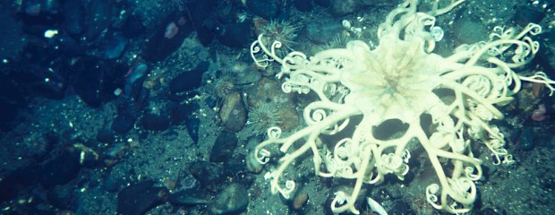 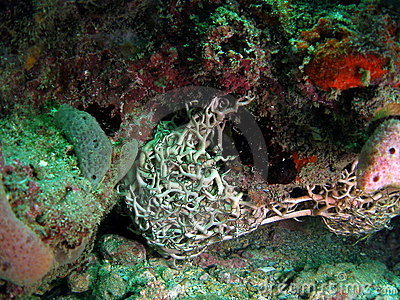 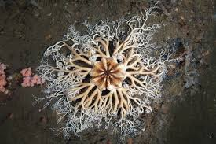El pez dientes de sable o pez ogro, se localiza por su mayor parte en las costas de Australia. A primera vista parece una bestia temible, pero solo llega a medir 17 centímetros, pero sus dientes llegan a medir hasta 94 milímetros (9.4 centímetros). Es una de las criaturas que viven a mayor profundidad del mar hasta el momento, al parecer le agradan las aguas que están cerca de congelarse. Y no, tú no le agradas.
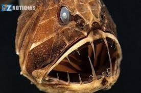 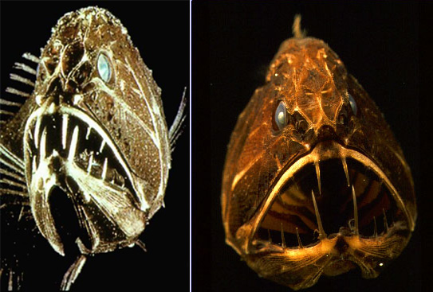 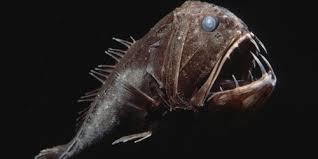El dragón marino de hojas (phycodurus eques) tiene como “salientes” que parecen hojas distribuidas en todo su cuerpo que le sirve como camuflaje para esconderse de sus depredadores, cuando se camufleja parece que es como una alga flotando. El dragón marino de hojas es encontrado en toda la parte costera de Australia; Un dragón ya adulto puede llegar a medir 45 centímetros (18 pulgadas). La hembra en épocas de apareamiento, deposita en promedio 250 huevos de color rosado brillante en una parte escondida de la cola del macho en la cual son fertilizados.
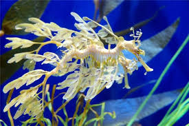 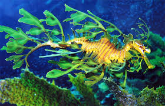 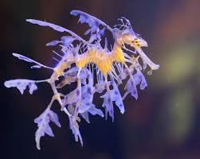Las medusas (también llamadas aguamalas, malaguas, aguavivas o lágrimas de mar) son organismos marinos pertenecientes al filo Cnidaria y al de los Celentéreos. Es una de las criaturas más bellas que habita en los mares. Su cuerpo transparente asimilado a la forma de una seta, toma con el agua diferentes tonos de rosa, violeta y azul. De sus bordes, nacen multitud de tentáculos, largos y delgados, que crean trampas mortales para los peces, pues gracias a las células venenosas, inmovilizan a todo pequeño animal que las toque y, en los peces de mayor tamaño, provoca un molesto escozor. De la parte central de la medusa cuelga una especia de mango; en su extremo se encuentra la boca y el mango en sí constituye el esófago. Aunque existan algunas medusas de agua dulce, son principalmente marinos. Las medusas se encuentran en todos los mares, pero con más abundancia en los mares cálidos.
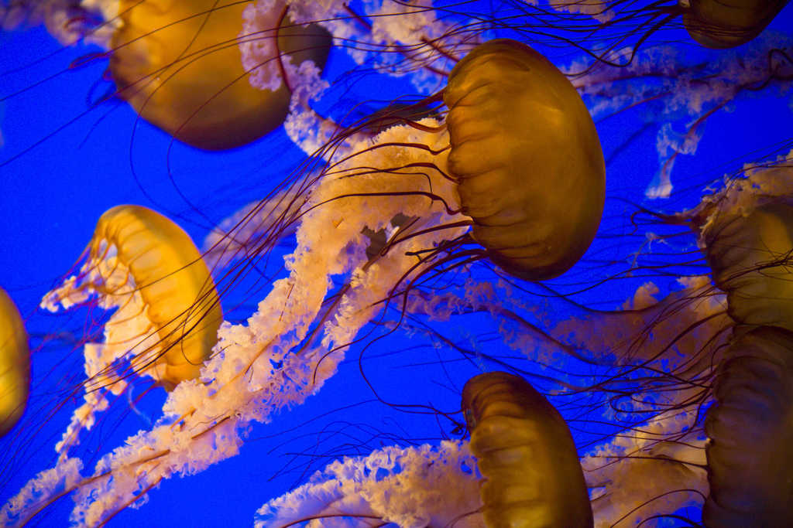 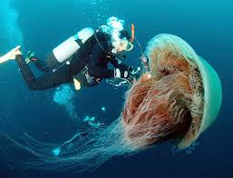 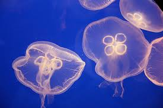